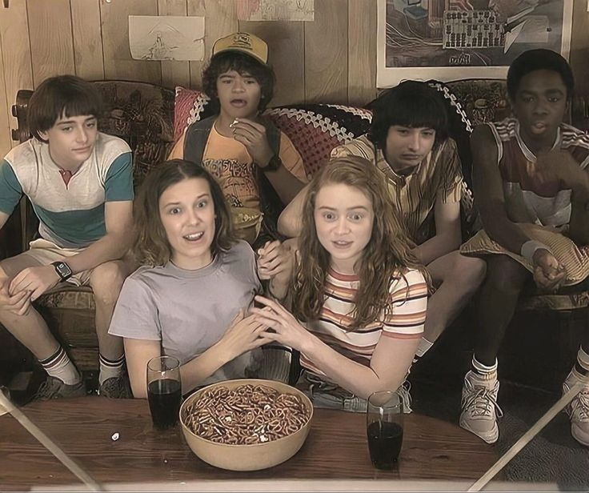
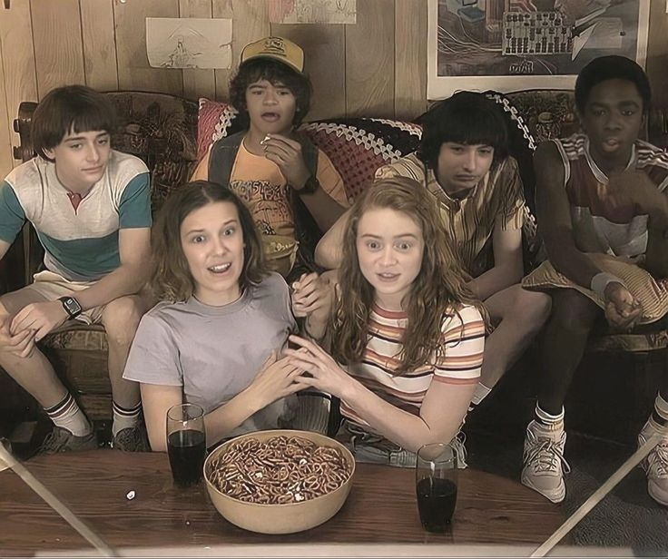

Tentang Stranger Things
Stranger Things adalah serial fiksi ilmiah dan horor populer dari Netflix
yang berlatar tahun 1980-an di kota kecil bernama Hawkins. Serial ini
menggabungkan misteri, persahabatan, eksperimen rahasia, dan makhluk dari
dimensi lain yang dikenal sebagai Upside Down.
Cerita dimulai ketika seorang anak bernama Will Byers tiba-tiba menghilang.
Teman-temannya kemudian menemukan seorang gadis misterius dengan kekuatan
telekinesis bernama Eleven. Dari sinilah berbagai rahasia gelap Hawkins
perlahan terungkap.
Serial ini terkenal karena nuansa nostalgia tahun 80-an, musik khas,
dan kombinasi genre horor, drama, serta petualangan remaja.
Karakter Utama
Eleven
Eleven, atau sering dipanggil El, adalah gadis dengan kemampuan
telekinesis dan kekuatan psikis luar biasa yang diperoleh melalui
eksperimen rahasia pemerintah di Hawkins Laboratory sejak kecil.
Ia dibesarkan di laboratorium tanpa kehidupan normal sehingga awalnya
kesulitan memahami dunia luar.
Setelah melarikan diri, Eleven bertemu Mike, Dustin, dan Lucas yang
membantunya menemukan arti persahabatan dan keluarga. Sepanjang cerita,
Eleven sering menggunakan kekuatannya untuk melindungi teman-temannya
dari ancaman makhluk Upside Down.
Karakter Eleven berkembang dari gadis pendiam dan takut menjadi sosok
yang lebih percaya diri, berani, dan emosional. Perjalanannya juga
menunjukkan perjuangan menemukan identitas diri serta memahami arti rumah
dan keluarga yang sesungguhnya.
Mike Wheeler
Mike Wheeler adalah salah satu anggota inti kelompok sahabat di Hawkins
dan sering menjadi pemimpin dalam mengambil keputusan penting. Ia dikenal
sebagai pribadi yang setia, peduli, dan berani melindungi teman-temannya,
terutama saat menghadapi ancaman dari Upside Down.
Mike adalah orang pertama yang menerima dan membantu Eleven ketika ia
melarikan diri dari laboratorium. Kedekatan mereka berkembang sepanjang
cerita, dan Mike sering menjadi sumber dukungan emosional bagi Eleven.
Seiring berjalannya waktu, Mike tumbuh menjadi remaja yang lebih dewasa
dan bertanggung jawab. Ia belajar menghadapi konflik persahabatan,
perubahan dalam hidup, serta bahaya yang terus mengancam kota Hawkins.
Will Byers
Will Byers adalah anak yang pertama kali menjadi korban kejadian misterius
di Hawkins ketika ia menghilang dan terjebak di dunia Upside Down. Peristiwa
tersebut menjadi awal dari seluruh konflik dalam serial ini.
Setelah kembali, Will masih memiliki hubungan misterius dengan Upside Down
dan sering merasakan kehadiran ancaman dari dimensi tersebut. Hal ini
membuat hidupnya penuh ketakutan dan tekanan emosional.
Meski mengalami banyak trauma, Will tetap menjadi pribadi yang lembut,
setia kepada teman-temannya, dan berusaha menjalani kehidupan normal di
tengah berbagai kejadian aneh yang terus terjadi.
Dustin Henderson
Dustin dikenal sebagai anggota kelompok yang paling ceria, cerdas, dan penuh
rasa ingin tahu. Ia sering menjadi sumber humor sekaligus ide kreatif saat
teman-temannya menghadapi masalah.
Ketertarikannya pada ilmu pengetahuan membantu kelompok memahami berbagai
fenomena aneh yang terjadi di Hawkins, termasuk makhluk dari Upside Down.
Walaupun sering bercanda, Dustin sangat peduli kepada sahabat-sahabatnya dan
selalu siap membantu saat situasi menjadi berbahaya.
Lucas Sinclair
Lucas adalah anggota kelompok yang dikenal berpikir logis dan realistis.
Ia sering mempertanyakan keputusan berbahaya demi menjaga keselamatan
teman-temannya.
Meskipun kadang terlihat keras kepala, Lucas sebenarnya sangat peduli dan
setia pada kelompoknya. Ia juga dikenal berani saat menghadapi ancaman
dari Upside Down.
Seiring waktu, Lucas berkembang menjadi sosok yang lebih dewasa dan mampu
menyeimbangkan antara logika, keberanian, serta persahabatan.
Max Mayfield
Max adalah gadis pemberani dan mandiri yang pindah ke Hawkins pada musim kedua.
Ia cepat menjadi bagian dari kelompok dan dikenal sebagai pemain skateboard
yang hebat. Max juga memiliki hubungan emosional penting dalam cerita,
terutama saat menghadapi trauma dan ancaman dari Upside Down.
Alur Cerita Singkat
Seiring berjalannya musim, ancaman dari Upside Down semakin kuat. Pemerintah,
ilmuwan, dan berbagai makhluk berbahaya muncul, membuat kota Hawkins terus
dilanda kejadian aneh.
Persahabatan para tokoh menjadi inti cerita. Mereka tumbuh bersama,
menghadapi ketakutan, kehilangan, dan bahaya demi menyelamatkan kota mereka.
Stranger Things tidak hanya tentang monster, tetapi juga tentang keluarga,
persahabatan, dan keberanian menghadapi dunia yang berubah.

 
